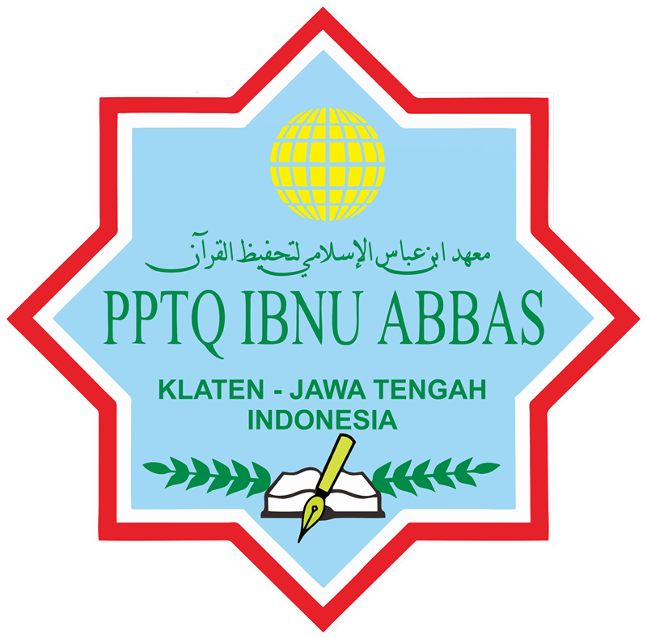

01Wajib
Bina Pribadi Islami
KepribadianPembiasaan ibadah, akhlak mulia, dan adab harian bagi seluruh santri.

Pondok Pesantren Tahfidhul Qur'an · PPTQ Ibnu Abbas Klaten
Mencetak generasi Qur'ani — kuat hafalan, unggul akademik, dan indah akhlak — dalam satu ekosistem pesantren dan sekolah.
Profil Sekolah
Harmoni pesantren dan sekolah dalam membina santri menjadi generasi Qur'ani yang berprestasi.
Meraih generasi Ulul Albab dan terbinanya Ahlusunnah wal Jama'ah merupakan tujuan pendidikan Islam. Ulul Albab generasi penerus terbaik yang mengembalikan kejayaan ummat islam yang diwariskan sahabat Nabi Muhammad SAWAllahu Yarham KH.Dr.Muhammad Mu'inudinillah Basri, Lc., M.A. Muassis Pendidikan PPTQ Ibnu Abbas Klaten
SMP IT Ibnu Abbas Klaten adalah unit pendidikan di bawah naungan Pondok Pesantren Tahfidhul Qur'an (PPTQ) Ibnu Abbas Klaten. Kami memadukan kurikulum Islam Terpadu, kurikulum nasional ((Diknas), dan kehidupan kesantrian dalam satu ekosistem pendidikan yang utuh.
Dengan pendampingan 24 jam, santri tumbuh dalam pembiasaan perilaku positif, ibadah rutin, dan kedisiplinan — sehingga hafalan, prestasi akademik, dan akhlak mulia berjalan seimbang.
Pendidikan Khas
Tiga pilar yang saling menopang — dijalankan oleh unit khusus di lingkungan PPTQ Ibnu Abbas Klaten.
Unit Ketatahfizhan
Berfokus pada pendampingan para santri dalam menghafalkan Al-Qur'an. Harapannya, santri mampu menyetorkan hafalan Al-Qur'an 9 juz secara mutqin dan istiqamah menjaganya.
Unit Sekolah
Perpaduan kurikulum Islam Terpadu, kurikulum nasional (Diknas), dan kehidupan pondok — sehingga santri siap berkompetisi di olimpiade maupun melanjutkan pendidikan ke jenjang terbaik.
Unit Kesantrian
Secara khusus mewadahi para santri dalam pengkaderan karakter serta akhlak mulia — melalui pembiasaan perilaku positif dan ibadah secara rutin, dengan pendampingan 24 jam penuh.
Kegiatan Ekstrakurikuler
Puluhan kegiatan bagi santri untuk berkembang — bahasa, sains, seni, olahraga, dan akhlak.
Pembiasaan ibadah, akhlak mulia, dan adab harian bagi seluruh santri.
Melatih kemandirian, kedisiplinan, dan kerja sama lewat pendidikan kepanduan.
Eksperimen, observasi, dan proyek sains yang mengasah rasa ingin tahu.
Latihan berbicara dan menulis bahasa Inggris dalam suasana yang menyenangkan.
Editing video, produksi konten, dan desain digital.
Belajar layout, tipografi, dan branding visual dari nol.
Melatih teknik, kerja sama tim, dan semangat sportivitas.
Latihan beladiri dengan jurus dan tendangan khas Korea.
Teknik lempar, kunci sendi, dan elakan dalam beladiri jarak dekat.
Kombinasi pukulan, footwork, dan daya tahan fisik.
Kihon, kumite, dan disiplin diri ala Jepang.
Fokus, konsentrasi, dan ketepatan sasaran hingga tingkat nasional.
Pelatihan pertolongan pertama (P3K).
Menulis huruf Arab dengan cepat, rapi, dan artistik.
Liputan, wawancara, dan penulisan berita sekolah.
Teknik lempar, bantalan, dan kontrol tubuh.
Menghafal dan membaca Al-Qur'an dengan tartil yang tepat.
Memasak dengan disiplin hygiene.
Belajar beladiri khas Nusantara.
Pembiasaan ibadah, akhlak mulia, dan adab harian bagi seluruh santri.
Melatih kemandirian, kedisiplinan, dan kerja sama lewat pendidikan kepanduan.
Menulis huruf Arab dengan cepat, rapi, dan artistik.
Pelatihan pertolongan pertama (P3K).
Teknik dasar silat dan kelenturan.
Editing video, produksi konten, dan desain digital.
Belajar layout, tipografi, dan branding visual dari nol.
Belajar kosa kata, tata bahasa, dan percakapan bahasa Arab.
Latihan berbicara dan menulis bahasa Inggris dalam suasana yang menyenangkan.
Memasak dengan disiplin hygiene.
Menghafal dan membaca Al-Qur'an dengan tartil yang tepat.
Eksperimen, observasi, dan proyek sains yang mengasah rasa ingin tahu.
Melatih menulis kreatif dan ekspresi ide.
Rekam Jejak
Lebih dari seratus prestasi dari tingkat kabupaten hingga internasional.
Medali emas kategori aplikasi perpustakaan digital edukatif di kancah internasional.
🥇Medali emas olimpiade nasional mata pelajaran IPA.
🥇Medali emas olimpiade nasional mata pelajaran Matematika.
🥇Prestasi menembak panahan hingga tingkat nasional.
🏹Kejuaraan MHQ hingga tingkat provinsi Jawa Tengah.
🏆78 prestasi tingkat kabupaten/kota lintas bidang — olahraga, pramuka, hingga inovasi teknologi.
🎖️Lingkungan Sekolah
Lingkungan belajar yang kondusif untuk santri putra dan putri.
Belangwetan, Klaten Utara, Kab. Klaten, Jawa Tengah
Lihat di PetaTroso, Karanganom, Kab. Klaten, Jawa Tengah
Lihat di PetaDokumentasi
Sarana prasarana lengkap dan momen-momen kegiatan santri dalam belajar, beribadah, dan berprestasi.